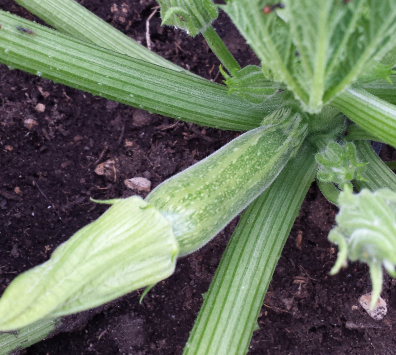
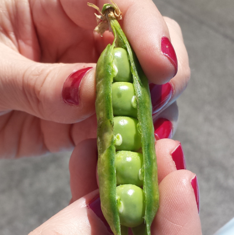

Zucchine

Coltivare in terreno molto ricco di materia organica e non coltivare dopo Solanacee o piante della stessa famiglia delle cucurbitacee.
-
Varietà: Zucchina chiara di Faenza -
Periodo di Semina: Marzo / Aprile -
Primo Raccolto: Fine Aprile -
Ultimo Raccolto: Fine Luglio -
Raccolto Dimensione Quantità Piccole (10cm) 16 Medie (11-16cm) 26 Grandi(>16cm) 9 51
Piselli

American Wonder: Varietà media precoce come ciclo colturale.
Consigli
-
Piantare in semenzaio riscaldato.
È importante:
-
Aquistare vasetti biodegradabili (di cocco o cartone)
-
Mantenere areato il semenzaio per evitare muffe
-
Non usare il coperchio del semenzaio
-
Non usare mettere il termosifone vicino al termosifone
-
-
-
Fissare i sostegni nel terreno non appena le piantine raggiungono i 10cm
-
Aquistare una rete con spazi di non più di 10cm per garantire sostegni adeguati